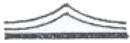
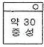
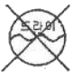
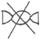
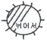
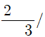
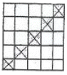
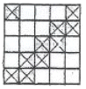
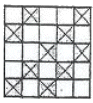
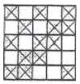

양장기능사 (2008-02-03 기출문제)
1과목: 임의 구분
1. 다음 실루엣 중 어깨 또는 진동둘레에서부터 절개선을 넣은 형은?
- 로 웨이스트 실루엣(low waist silhouette)
- 시스 실루엣(sheath silhouette)
- 색 실루엣(sack silhouette)
- 프린세스 실루엣(princess silhouette)
(정답률: 95%)

2. 인체의 기준선 중 어깨 관절의 위치로 앞면에 상완골 머리의 중앙을 지나며 후면에 있어서 어깨점을 따라서 겨드랑이로 내려오는 선은?
- 진동둘레선
- 허리둘레선
- 가슴둘레선
- 목둘레선
(정답률: 81%)
3. 다음 중 길 원형의 필요수치에 해당되지 않는 것은?
- 가슴둘레
- 등길이
- 어깨너비
- 소매길이
(정답률: 96%)
4. 밑위길이(crotch length)의 측정 길이로서 옳은 것은?
- 경부근점으로부터 유두점을 통과하여 허리둘레선까지의 길이
- 허리둘레선의 옆중심점에서 엉덩이 둘레선까지의 길이
- 의자에 앉았을 때 허리둘레선의 옆중심점으로 부터 의자바닥까지의 길이
- 경부근점으로부터 유두점까지의 길이
(정답률: 89%)
5. 의복 원형제도 중 기본원형과 가장 거리가 먼 것은?
- 길 (bodice)
- 소매(sleeve)
- 스커트(skirt)
- 다트(dart)
(정답률: 80%)
6. 상반신 굴신체의 보정으로 가장 옳은 것은?
- 허리 다트 분량을 줄여준다.
- 옆선에서 여유분을 늘인다.
- 뒷 길이의 부족분을 절개하여 벌려 준다.
- 어깨 다트에서 늘인 양만큼 어깨 끝점과 등 폭을 줄여준다.
(정답률: 79%)
7. 재단할 때의 주의 점으로 틀린 것은?
- 슈트, 투피스 등의 겹옷은 안단을 붙여서 재단한다.
- 소매, 바지 등의 단 부분이 좁아서 경사가 많으면 밑단 시접을 접은 다음 재단한다.
- 다트나 주름이 있는 경우에는 다트를 접거나 주름을 접은 다음에 시접을 넣어 재단한다.
- 칼라의 라벨(lapel)부분이 넓은 스포츠칼라일 경우에 는 안단을 따로 재단한다.
(정답률: 70%)
8. 손수건이나 스카프 등과 같은 얇은감으로 단을 말아서 좁게 접을 때 이용되는 손바느질은?
- 공그르기
- 실표뜨기
- 심뜨기
- 말아감치기
(정답률: 75%)
9. 피터 팬 칼라(Perter Pen collar)의 곡선부분 시접 처리가 아닌 것은?
- 마분지형을 대고 다린다.
- 시접을 박아 잡아 당겨서 오그린다.
- 안칼라 쪽으로 0.2~0.3cm 넘어가도록 꺽고 다린다.
- 겉칼라 쪽으로 0.5~09cm 넘어가도록 꺽고 다린다.
(정답률: 79%)
10. 심 퍼커링(seam puckering)에 대한 설명으로 틀린 것은?
- 재봉바늘이 옷감을 관통할 때 밀도가 낮은 옷감은 재봉바늘에 의해 경사와 위사가 서로 다른 방향으로 밀려 퍼커링이 발생한다.
- 실의 장력이 너무 약하면 스티치 형성이 엉성하여 심의 강도가 약해지고 장력이 너무 강하면 퍼커링이 생긴다.
- 소재의 방향에 따라서 경사 방향은 퍼커링 현상이 가장 많이 나타나고 그 다음 위사방향 이고, 바이어스 방향은 거의 나타나지 않는다.
- 천을 구성하는 섬유와 같은 종류의 봉사를 사용하는 것이 좋다.
(정답률: 19%)
11. 시접을 가르거나 한쪽으로 꺾어 위로 눌러 박는 바느질은?
- 쌈솔
- 뉜솔
- 통솔
- 가름솔
(정답률: 74%)
12. 다음 중 2차원적 인체 계측법에 속하지 않는 것은?
- 실루엣터법
- 슬라이딩게이지법
- 입체사진법
- 마틴식인체계측법
(정답률: 82%)
13. 다음 중 의복 각 부위의 기본 시접으로 가장 옳은 것은?
- 어깨:1cm, 옆선:1cm, 허리선:3cm
- 옆선:1cm, 밑단:1cm, 소매 단:2cm
- 목둘레:1cm, 칼라:1cm, 소매 단:3cm
- 허리선: 2cm, 목둘레:2cm, 스커트단: 1cm
(정답률: 90%)
14. 다음 중 소매산으로만 14. 구성되는 것으로 귀여운 형의 소매는?
- 랜턴 슬리브(lantern sleeve)
- 퍼프 슬리브(puff sleeve)
- 캡 슬리브(cap sleeve)
- 타이트 슬리브(tight sleeve)
(정답률: 57%)
15. 손바느질 중 바늘 땀을 되돌아 와서 뜨는 것은?
- 홈질
- 박음질
- 섞음질
- 시침질
(정답률: 94%)
16. 다림질의 조건에 대한 설명으로 옳은 것은?
- 다리미의 적정한 표면온도는 사용하는 다리미의 무게와 압력, 다림질의 속도, 다리미와 옷감의 접촉시간 등에 관계없이 일정하다.
- 일반적으로 다림질할 때는 압력이 클수록 그 효과는 작으며 옷감의 종류 및 조직에 따라 압력 조건이 다르다.
- 압력이 적고 온도가 낮아도 다림질하는 시간이 길면 프레스(press)의 효과가 크다. 그러나 백색직물에 있어서 다리미의 접촉시간이 길면 백도에 변화가 생기기 쉽기 때문에 주의해야 한다.
- 친수성 섬유의 다림질에는 별도의 수분을 공급할 필요가 없다.
(정답률: 64%)
17. 본봉 재봉기의 구조 중 실채기에 의해 실을 위로 올리는 장치는?
- 톱니
- 바늘대
- 천평크랭크
- 노루발
(정답률: 65%)
18. 뒤 칼라의 너비와 비슷한 너비로 앞으로 넘어가 약간 둥글고 유연하게 된 플랫 칼라 형은?
- 롤 칼라(rolled collar)
- 숄 칼라(showl collar)
- 만다린 칼라(mandarin collar)
- 컨버터블 칼라(convertible collar)
(정답률: 36%)
19. 솟은 어깨의 체형은 앞. 뒤 어깨가 당겨져서 어깨를 향해 수평으로 당기는 주름이 생기므로 이에 대한 보정 방법으로 가장 옳은 것은?
- 앞, 뒤 어깨 끝점을 위로 올려준다.
- 앞, 뒤 어깨 끝점을 아래로 내려준다.
- 앞, 뒤 어깨 끝점을 위로 올려주고, 같은 양으로 진동둘레 밑에서도 같은 치수로 올려준다.
- 앞, 뒤 어깨 끝점으로 아래로 내린 양과 같은 양으로 진동둘레도 내려준다.
(정답률: 85%)
20. 모심지에 대한 설명으로 틀린 것은?
- 신축성이 작고 단단하다.
- 적당한 드레이프(drape)성이 있다.
- 방추성이 우수하다.
- 형태안성이 우수하다.
(정답률: 36%)
2과목: 임의 구분
21. 옷감의 표시방법 중 일반적으로 완성선에서 0.1cm 떨어져 표시하는 것은?
- 초크
- 트레이싱 페이퍼
- 룰렛
- 실표뜨기
(정답률: 36%)
22. 스커트 종류 중 가장 기본이 되는 것으로 엉덩이 둘레선에서 수직으로 내려오는 형의 스커트는?
- 플레어 스커트(flare skirt)
- 스트레이트 스커트(straight skirt)
- 고어 스커트(gored skirt)
- 플리츠 스커트(pleats skirt)
(정답률: 95%)
23. 옷감의 완성선 표시 방법에 대한 설명으로 옳은 것은?
- 룰렛을 사용할 경우 완성선에 정확히 표시 하는 것이 좋다.
- 쵸크를 사용할 때는 선이 지워질 우려가 있으므로 굵고 선명하게 표시한다.
- 실표뜨기의 바늘땀은 곡선과 직선 모두 일정한 간격으로 표시한다.
- 옷감을 상하게 하지 않게 하는 가장 완전한 표시 방법은 실표뜨기로 하는 것이다.
(정답률: 63%)
24. 제도용구중 제도한 것을 다른 종이에 옮길 때 사용하는 것은?
- 트레이싱 페이퍼
- 컴퍼스
- 룰렛
- 방안자
(정답률: 46%)
25. 의복원형 제도법 중 장촌식 제도방법에 가장 중요한 치수는?
- 허리둘레
- 가슴둘레
- 신장
- 엉덩이둘레
(정답률: 70%)
26. 의복제도 부호 중 오그림 표시는?

(정답률: 73%)
27. 주름 잡는 위치에 따라 종류가 달라지며 주름 27. 잡는 모양에 따라 슬리브 모양과 어깨 모양이 달라지는 슬리브는?
- 비숍 슬리브(bishop sleeve)
- 퍼프 슬리브(puff sleeve)
- 케이프 슬리브(cape sleeve)
- 타이트 슬리브(tight sleeve)
(정답률: 79%)
28. 다음 소재 중 스팀다리미 사용이 불가능한 것은?
- 레이온
- 비닐론
- 견
- 면
(정답률: 96%)
29. 다음 중 제품의 원가 계산시 고려되어야 하는 제품생산 요인에 해당되지 않는 것은?
- 재료비
- 재고비
- 제조경비
- 인건비
(정답률: 85%)
30. 길 원형을 제도할 때 일반적인 가로선의 기초선 치수는?
- B/2 -(1~2cm)
- B/2 +(4~5cm)
- B/4 +(4~5cm)
- B/6 -(4~5cm)
(정답률: 62%)
31. 합성섬유에 일반적으로 많이 적용되는 표백제는?
- 아염소산나트륨
- 표백분
- 과탄산나트륨
- 하이드로설파이드
(정답률: 45%)
32. 가장 튼튼한 옷감으로 의복에 많이 사용되는 조직은?
- 평직
- 능직
- 주자직
- 봉소직
(정답률: 48%)
33. 항중식 번수로 굵기를 나타내는 실은?
- 면사
- 견사
- 나일론사
- 폴리에스테르사
(정답률: 69%)
34. 다음 섬유제품 취급표시 중 양모제품에 표시하는 기호로 틀린 것은?




(정답률: 69%)
35. 양모섬유의 겉비늘(scale)과 밀접한 관계가 없는 것은?
- 광택 및 양털보호
- 세트성 및 흡수성
- 탄성 및 수축성
- 섬유간의 포합성 및 방적성
(정답률: 23%)
36. 비스코스 레이온의 제조에 있어서 사용하지 않는 것은?
- 수산화나트륨
- 농질산
- 황산나트륨
- 이황화탄소
(정답률: 45%)
37. 다음 중 명주를 노란색으로 변화시키는 약제는?
- 질산
- 염산
- 탄닌산
- 아세트산
(정답률: 53%)
38. 다음 중 섬유의 단면이 삼각형이고 가장자리는 약간 둥글며 측면은 투명 막대로 이루어지고 피브로인과 세리신으로 구성된 섬유는?
- 면
- 마
- 아크릴
- 명주
(정답률: 69%)
39. 무명을 가열시 갈색으로 변하는 온도는?
- 150℃
- 200℃
- 250℃
- 300℃
(정답률: 79%)
40. 섬유 간의 포합성을 크게 하여 방적성을 증가하는 요소가 아닌 것은?
- 섬유의 길이
- 마찰계수
- 대전성
- 권축성
(정답률: 57%)
3과목: 임의 구분
41. 색의 온도감에 대한 설명으로 틀린 것은?
- 색상보다는 채도에 의한 효과가 지배적이다.
- 빨강 계통의 색은 따뜻하게 느껴진다.
- 파랑 계통의 색은 차갑게 느껴진다.
- 한색은 단파장 쪽의 색이다.
(정답률: 53%)
42. 다음 중 가장 어둡고 침착하고 차분한 느낌의 색은?
- 녹색
- 연두
- 노랑
- 남색
(정답률: 85%)
43. 다음 중 우리의 시선을 끄는 힘이 가장 강한 색은?
- 흰색, 검정
- 빨강, 노랑
- 파랑, 보라
- 녹색, 자주
(정답률: 86%)
44. 디자인의 기본 형태에 해당 되지 않는 것은?
- 점
- 면
- 색채
- 입체
(정답률: 34%)
45. 다음 중 명도가 낮은 색은?
- 흰색
- 검정
- 노랑
- 초록
(정답률: 82%)
46. 의상의 기본 요소 중 의상의 각 부분이나 전체의 모양에 의해서 만들어지는 아름다움을 나타내는 것은?
- 기능미
- 재료미
- 형태미
- 색채미
(정답률: 89%)
47. 색료 혼합에 대한 설명으로 틀린 것은?
- 혼합하면 할수록 명도와 채도가 낮아진다.
- 색료 혼합의 3원색은 자주, 노랑, 청록이다.
- 감법혼색 또는 감산혼합이라고 한다.
- 3원색이 모두 합쳐지면 흰색에 가까워진다.
(정답률: 58%)
48. 문양의 시각효과에 대한 설명으로 틀린 것은?
- 문양이 클수록 눈에 잘 띄므로 이를 조절한다.
- 문양은 신체의 특정 부분을 강조할 수 없어 단점으로 작용한다.
- 문양이 너무 크면 체형을 크게 보이는 효과가 있어 체형이 큰 사람은 피한다.
- 작은 격자 모양은 작은 체형과 중간 체형에 어울린다.
(정답률: 72%)
49. 다음 중 자연적인 것과 발랄한 생명감을 가지며 활동적인 느낌을 주는 선은?
- 수직선
- 곡선
- 수평선
- 지그재그선
(정답률: 71%)
50. 남색의 의복이 노랑을 배경으로 했을 때 서로의 영향으로 인하여 각각의 채도가 더 높게 보이는 현상은?
- 보색대비
- 면적대비
- 명도대비
- 색상대비
(정답률: 70%)
51. 다음 중 평직의 특징으로 틀린 것은?
- 가장 간단한 조직이다.
- 구김이 잘 생기지 않고 광택이 우수하다.
- 밀도를 많이 할 수 없다.
- 비교적 바닥이 튼튼하다.
(정답률: 75%)
52. 천연 섬유의 불순물을 제거하는 공정은?
- 정련
- 발호
- 표백
- 가호
(정답률: 77%)
53.

사문조직(능직)은?



(정답률: 44%)
54. 직물의 표면에 있는 모우(잔털)를 태워서 광택을 부여하는 방법은?
- 다듬이질
- 신징
- 머어서화 가공
- 엠보싱
(정답률: 50%)
55. 5매 주자직의 제직 가능한 뜀 수는?
- 2,3
- 3,5
- 3,7
- 5,7
(정답률: 91%)
56. 머서화 가공(mercerization)으로 얻어지는 효과가 아닌 것은?
- 흡습성의 증가
- 염색성의 증가
- 광택의 증가
- 내연성의 증가
(정답률: 69%)
57. 직물 표면에 나타나 있는 실 매듭, 맺음 코, 실 끝 등을 족집게, 핀셋, 가위 등으로 제거하는 작업은?
- 노팅(knotting)
- 멘딩(mending)
- 얼룩빼기(stain removing)
- 비밍(beaming)
(정답률: 69%)
58. 의류의 세탁에 대한 설명으로 틀린 것은?
- 세탁온도는 일반적으로 약 35~ 40℃가 적당하다.
- 경수에서는 섬유의 종류에 관계없이 비누보다는 합성세제를 사용하는 것이 좋다.
- 양모나 견에서는 알칼리성 세제, 면이나 마에서는 중성 세제를 사용한다.
- 세제의 농도는 약 정도에서 0.2% 비교적으로 우수한 세탁 효과를 나타낸다.
(정답률: 65%)
59. 다음 중 일광 견뢰도가 불량하여 커튼용으로 가장 부적합한 소재는?
- 면 직물
- 아크릴 직물
- 폴리에스테르 직물
- 나일론 직물
(정답률: 50%)
60. 편물로 된 의류가 바람 부는 곳에서 추위를 느끼는 주된 이유는?
- 함기도가 높기 때문이다
- 흡습성이 크기 때문이다
- 통기성이 크기 때문이다
- 열전도도가 적기 때문이다
(정답률: 84%)